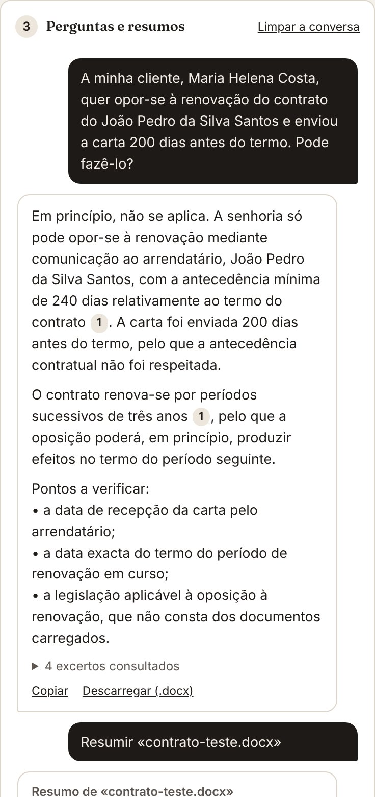

Peça em linguagem corrente
Organize os documentos em dossiês, um por processo ou por cliente, e pergunte em linguagem corrente. Cada resposta indica os excertos e as páginas em que se baseia, para verificação imediata. Por exemplo:
- «Tenho um cliente arrendatário e a senhoria enviou a oposição à renovação 200 dias antes do termo. A cláusula aplica-se?»
- «Resume o contrato: partes, objecto, prazos e valores.»
- «Que prazos resultam destes documentos?»
- «Há contradições entre a petição e o contrato?»
- «Que obrigações tem o empreiteiro nos termos do caderno de encargos?»

O que faz
Como adquirir e começar a utilizar
130 €
Licença individual, em pagamento único.
- Envie mensagem a Ana Marta Soares no LinkedIn. Após o pagamento, recebe o código de licença, que começa por COFRE-.
- Instale o Assessor seguindo os passos abaixo.
- Abra o Assessor Documental, cole o código e seleccione Activar.
- Para usar o assistente, ligue a sua conta Cloudflare gratuita seguindo os passos abaixo (cerca de cinco minutos, uma única vez).
Instalação em um minuto
O Assessor Documental funciona no browser do computador ou do telemóvel e pode ser instalado como uma aplicação. Os documentos ficam guardados apenas no aparelho em que os carregar.
- Abra o Assessor Documental no Google Chrome, no Microsoft Edge ou no Brave.
- Seleccione o ícone de instalação, no lado direito da barra de endereço, e confirme com Instalar. O Assessor Documental passa a abrir numa janela própria, como as restantes aplicações.
- Cole o código de licença e seleccione Activar.
- Abra o Assessor Documental no Safari.
- Seleccione o botão Partilhar e depois Adicionar ao ecrã principal.
- Abra o ícone criado, cole o código de licença e seleccione Activar.
- Abra o Assessor Documental no Chrome.
- No menu (os três pontos), seleccione Instalar aplicação ou Adicionar ao ecrã principal.
- Abra o ícone criado, cole o código de licença e seleccione Activar.
Ligar a conta de IA
O assistente usa o serviço de IA da Cloudflare. Ao ligar uma conta sua, gratuita, passa a dispor de uma quota diária só para si, sem qualquer custo e sem cartão de crédito. O procedimento demora cerca de cinco minutos e só se faz uma vez.
- Criar a conta. Abra dash.cloudflare.com/sign-up, indique o seu endereço de correio electrónico e uma palavra-passe e confirme a conta através da mensagem que recebe.
- Abrir o Workers AI. No painel da Cloudflare, no menu da esquerda, abra AI e depois Workers AI. Seleccione Use REST API.
- Copiar o identificador da conta. Em Get Account ID, copie o código Account ID.
- Criar o token. Seleccione Create a Workers AI API Token, depois Create API Token, e copie o token com Copy API Token. Guarde-o, porque a Cloudflare só o mostra uma vez.
- Ligar a conta no Assessor. No Assessor Documental, abra o separador Conta de IA. Cole o Account ID no primeiro campo e o token no segundo e seleccione Guardar e testar. O Assessor confirma a ligação.
Redes de empresas e serviços públicos
O Assessor Documental funciona em redes privadas e protegidas, desde que tenham acesso à internet para os endereços abaixo. Nas redes com filtragem de tráfego, o serviço de informática deve autorizá-los:
ana-marta-soares-direito-ia.github.io: aplicação e verificação da licençaassessor-ia.pages.dev: ligação ao serviço de IA
A aplicação abre sem rede; a IA precisa de acesso a estes dois endereços.
Em redes totalmente isoladas da internet, o assistente de IA não pode funcionar, porque depende do serviço da Cloudflare.
Perguntas frequentes
O que é o Assessor Documental?
Uma aplicação para o computador e o telemóvel que resume documentos Word e PDF e responde a perguntas sobre eles, com citação dos excertos, semelhante ao NotebookLM, mas com os documentos guardados apenas no aparelho e os dados pessoais protegidos.
Os meus documentos são enviados para algum servidor?
Os documentos são lidos e guardados apenas no aparelho. Para cada pergunta, seguem para o serviço de IA da sua conta Cloudflare apenas os excertos relevantes, com os dados pessoais substituídos por etiquetas, que são repostas no aparelho.
As respostas são fiáveis?
As respostas baseiam-se nos documentos carregados e indicam os excertos e as páginas de que resultam, para verificação. São propostas geradas automaticamente e não substituem a análise jurídica.
Funciona no telemóvel?
Sim, no iPhone, no iPad e no Android, e também no computador, com Windows ou Mac. Pode ser instalado como aplicação.
Que documentos lê?
Documentos Word (.docx), PDF com texto, ficheiros de texto e texto colado. Os PDF digitalizados sem texto não podem ser lidos.
Porque é preciso uma conta Cloudflare?
A IA corre na conta Cloudflare gratuita do próprio utilizador, com uma quota diária só sua, sem custos e sem cartão de crédito. Os passos estão nesta página, na secção «Ligar a conta de IA».
Quanto custa o Assessor Documental?
A licença individual custa 130 €, em pagamento único, e é adquirida a Ana Marta Soares.